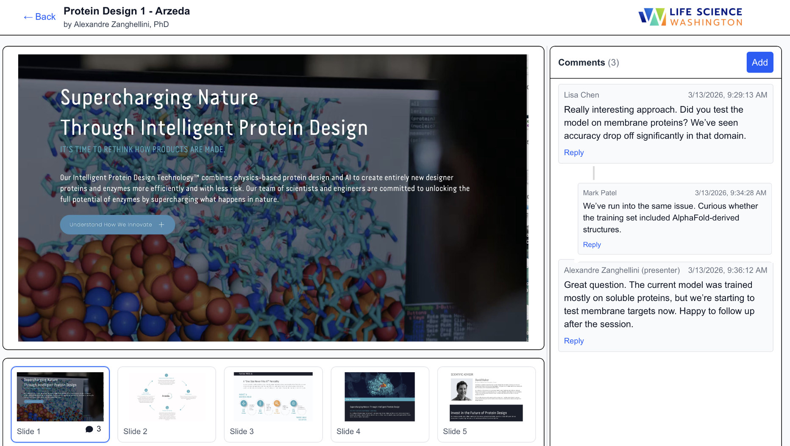
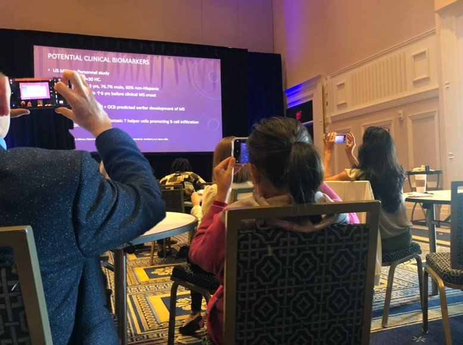

With 1stCite, attendees can view and discuss every talk, presenters can hear every question and comment, and you can observe and measure it all in real time.
Conferences are rare gatherings of expert communities. What happens during a presentation is everything that peer review aspires to be — real-time expert scrutiny, cross-pollination of ideas, and the collective reaction of that scientific community to new findings. Conferences create tremendous value. 1stCite helps more fully capture that value.


The structure of a typical conference means attendees miss most presentations, content they traveled across the world to see.
Presentations routinely end with unanswered questions. Every one that goes unasked is a missed opportunity.
After the conference, groundbreaking science disappears in the long wait to publication.
Scientific societies are natural, powerful social networks focused on research — yet most of that network's energy is compressed into a few days a year. By creating a model for sharing presentations easily online, the conference and the conversations become unstuck in time.
Choose an upcoming conference or a recent one with presentation content available.
1stCite configures a branded instance for your society in days, not months.
Upload PDFs and abstracts — bulk or individually. We handle formatting.
Share with your attendees and track engagement in real time.
We'll walk you through the platform and set up a free test run tailored to your society.
Contact Us